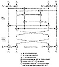

| Previous | Table of Contents | Next |
RSADSI’s refusal to make RC2 public casts doubt on their claims. They are willing to provide details of the algorithm to most anyone willing to sign a nondisclosure agreement, and have claimed to allow cryptanalysts to publish any negative results they find. I don’t know of any cryptanalyst outside the employ of the company who studied it, since it would amount to doing their analysis work for them.
Still, Ron Rivest is not the usual snake-oil peddler. He’s a respected and competent cryptographer. I would put a fair degree of trust in the algorithm, even though I haven’t personally inspected the code. RC4, once the proprietary intellectual property of RSADSI, was posted to the Internet (see Section 17.1), and it’s probably just a matter of time before RC2 is posted as well.
An agreement between the Software Publishers Association (SPA) and the U.S. government gave RC2 and RC4 (see Section 17.1) special export status (see Section 25.14). Products that implement one of these two algorithms have a much simpler export approval process, provided that the keys are no more than 40 bits long.
Is a 40-bit key enough? There are a total of one trillion possible keys. Assuming that brute force is the most efficient method of cryptanalysis (a big assumption, considering that the algorithm has never been published), and assuming that a brute-force cryptanalysis chip can test one million keys per second, it will take him 12.7 days to find the correct key. One thousand machines working in parallel can produce the key in twenty minutes.
RSA Data Security, Inc., maintains that while encryption and decryption are quick, exhaustive key search is not. A significant amount of time is spent setting up the key schedule. While this time is negligible when encrypting and decrypting messages, it is not when trying every possible key.
The U.S. government would never allow export of any algorithm it couldn’t, at least in theory, break. They could create a magnetic tape or CD of a specific plaintext block encrypted with every possible key. To break a given message, they could just run the tape and compare the ciphertext blocks in the message with the ciphertext blocks on the tape. If there is a match, they could try the candidate key and see if the message makes any sense. If they choose a common plaintext block (all zeros, the ASCII characters for a space, etc.), this method should work. The storage requirement for a 64-bit plaintext block encrypted with all 1012 possible keys is 8 terabytes—certainly possible.
For information on licensing RC2, contact RSADSI (see Section 25.4).
The first incarnation of the IDEA cipher, by Xuejia Lai and James Massey, surfaced in 1990 [929]. It was called PES (Proposed Encryption Standard). The next year, after Biham and Shamir’s demonstrated differential cryptanalysis, the authors strengthened their cipher against the attack and called the new algorithm IPES (Improved Proposed Encryption Standard) [931,924]. IPES changed its name to IDEA (International Data Encryption Algorithm) in 1992 [925].
IDEA is based on some impressive theoretical foundations and, although cryptanalysis has made some progress against reduced-round variants, the algorithm still seems strong. In my opinion, it is the best and most secure block algorithm available to the public at this time.
The future of IDEA is not yet clear. There has been no rush to adopt it as a replacement to DES, partly because it is patented and must be licensed for commercial applications, and partly because people are still waiting to see how well the algorithm fares during the coming years of cryptanalysis. Its current claim to fame is that it is part of PGP (see Section 24.12).
Overview of IDEA
IDEA is a block cipher; it operates on 64-bit plaintext blocks. The key is 128 bits long. The same algorithm is used for both encryption and decryption.
As with all the other block ciphers we’ve seen, IDEA uses both confusion and diffusion. The design philosophy behind the algorithm is one of “mixing operations from different algebraic groups.” Three algebraic groups are being mixed, and they are all easily implemented in both hardware and software:
All these operations (and these are the only operations in the algorithm—there are no bit-level permutations) operate on 16-bit sub-blocks. This algorithm is even efficient on 16-bit processors.
Description of IDEA
Figure 13.9 is an overview of IDEA. The 64-bit data block is divided into four 16-bit sub-blocks: X1, X2, X3, and X4. These four sub-blocks become the input to the first round of the algorithm. There are eight rounds total. In each round the four sub-blocks are XORed, added, and multiplied with one another and with six 16-bit subkeys. Between rounds, the second and third sub-blocks are swapped. Finally, the four sub-blocks are combined with four subkeys in an output transformation.
In each round, the sequence of events is as follows:

Figure 13.9 IDEA.
The output of the round is the four sub-blocks that are the results of steps (11), (12), (13), and (14). Swap the two inner blocks (except for the last round) and that’s the input to the next round.
After the eighth round, there is a final output transformation:
Finally, the four sub-blocks are reattached to produce the ciphertext.
Creating the subkeys is also easy. The algorithm uses 52 of them (six for each of the eight rounds and four more for the output transformation). First, the 128-bit key is divided into eight 16-bit subkeys. These are the first eight subkeys for the algorithm (the six for the first round, and the first two for the second round). Then, the key is rotated 25 bits to the left and again divided into eight subkeys. The first four are used in round 2; the last four are used in round 3. The key is rotated another 25 bits to the left for the next eight subkeys, and so on until the end of the algorithm.
| Previous | Table of Contents | Next |
){kind=link}
){kind=link}